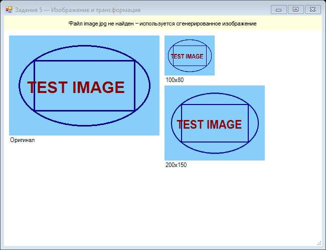

Урок 2.8: Загрузка изображений
📌 Ключевые моменты этого урока:
- Image — базовый класс для всех изображений
- Bitmap —실конкретная реализация для растровых изображений (BMP, PNG, JPG и т.д.)
- DrawImage рисует изображение на Graphics поверхности
- Изображение можно масштабировать, обрезать и трансформировать
- Правильно используйте using для освобождения памяти
- InterpolationMode влияет на качество масштабирования
- Можно работать с пикселями напрямую через GetPixel/SetPixel
Image и Bitmap — классы для работы с растровыми изображениями
Разница между Image и Bitmap:
- Image — это абстрактный базовый класс для всех изображений
- Bitmap — конкретная реализация для растровых изображений (матрица пикселей)
- Bitmap может быть создана из файла, памяти или с нуля
Создание пустого Bitmap'а (для рисования в памяти):
// Создание пустого изображения размером 800x600 пикселей
Bitmap bmp = new Bitmap(800, 600);
// Создание с определенным форматом пикселя
Bitmap bmp32bit = new Bitmap(800, 600, System.Drawing.Imaging.PixelFormat.Format32bppArgb);
// Копирование существующего Bitmap'а
Bitmap bmpCopy = new Bitmap(originalBitmap);Загрузка изображения из файла
Простая загрузка:
// Самый простой способ
Bitmap bmp = new Bitmap("image.jpg");
Image img = Image.FromFile("photo.png");
// Работаем с изображением
int width = bmp.Width;
int height = bmp.Height;С обработкой ошибок (РЕКОМЕНДУЕТСЯ):
try
{
Bitmap bmp = new Bitmap("image.jpg");
// Работа с изображением
bmp.Dispose(); // Освобождать вручную
}
catch (FileNotFoundException)
{
MessageBox.Show("Файл не найден!");
}
catch (Exception ex)
{
MessageBox.Show("Ошибка загрузки: " + ex.Message);
}С using блоком (ЛУЧШИЙ СПОСОБ):
Автоматически вызывает Dispose() когда переменная выходит из области видимости:
// Безопасная загрузка с автоматическим освобождением
using (Bitmap bmp = new Bitmap("image.jpg"))
{
// Работа с изображением
int w = bmp.Width;
int h = bmp.Height;
} // Automatically Dispose() called hereOpenFileDialog для выбора файла:
OpenFileDialog openFileDialog = new OpenFileDialog();
openFileDialog.Filter = "Image files (*.jpg;*.png;*.bmp)|*.jpg;*.png;*.bmp|All files (*.*)|*.*";
openFileDialog.Title = "Выберите изображение";
if (openFileDialog.ShowDialog() == DialogResult.OK)
{
try
{
currentBitmap = new Bitmap(openFileDialog.FileName);
this.Invalidate(); // Перерисовать форму
}
catch (Exception ex)
{
MessageBox.Show("Ошибка: " + ex.Message);
}
}DrawImage — рисование изображения
Простое рисование (исходный размер):
// Рисуем изображение в точке (x, y)
g.DrawImage(image, 10, 10);
// С использованием PointF
g.DrawImage(image, new PointF(50, 50));Рисование с масштабированием:
// Рисуем с новым размером (200x150 пикселей)
g.DrawImage(image, 10, 10, 200, 150);
// Or in a Rectangle
Rectangle destRect = new Rectangle(10, 10, 200, 150);
g.DrawImage(image, destRect);Рисование части изображения (обрезка):
// Извлекаем часть исходного изображения
Rectangle srcRect = new Rectangle(0, 0, 100, 100); // Что взять из исходника
// И рисуем ее в другом размере
Rectangle destRect = new Rectangle(10, 10, 200, 200); // Куда и в каком размере
g.DrawImage(image, destRect, srcRect, GraphicsUnit.Pixel);Масштабирование изображений
Простое масштабирование без сохранения пропорций:
// Растянуть на 300x200, независимо от оригинального размера
g.DrawImage(image, 10, 10, 300, 200);Масштабирование с сохранением пропорций (ПРАВИЛЬНО):
private Size CalculateNewSize(int originalWidth, int originalHeight, int maxWidth, int maxHeight)
{
// Считаем пропорции
double aspectRatio = (double)originalWidth / originalHeight;
int newWidth = maxWidth;
int newHeight = (int)(newWidth / aspectRatio);
// Если высота не влезает, обрезаем по ширине
if (newHeight > maxHeight)
{
newHeight = maxHeight;
newWidth = (int)(newHeight * aspectRatio);
}
return new Size(newWidth, newHeight);
}
// Использование
Size newSize = CalculateNewSize(image.Width, image.Height, 200, 150);
g.DrawImage(image, 10, 10, newSize.Width, newSize.Height);Высококачественное масштабирование (InterpolationMode):
По умолчанию Graphics масштабирует быстро, но качество может быть плохим. Улучших качество:
using System.Drawing.Drawing2D;
// Установка высокого качества интерполяции (медленнее, но красиво)
g.InterpolationMode = InterpolationMode.HighQualityBicubic;
g.DrawImage(image, 10, 10, 400, 300);
// Другие режимы интерполяции
// InterpolationMode.Bilinear — хороший компромисс между качеством и скоростью
// InterpolationMode.NearestNeighbor — быстро, но низкое качество
// InterpolationMode.HighQualityBicubic — лучшее качествоСохранение изображений
Сохранение в разных форматах:
using System.Drawing.Imaging;
Bitmap bmp = new Bitmap(800, 600);
// ... рисуем что-то ...
// JPEG (с качеством)
bmp.Save("output.jpg", ImageFormat.Jpeg);
// PNG (без потер качества, но больше размер)
bmp.Save("output.png", ImageFormat.Png);
// BMP (большой размер)
bmp.Save("output.bmp", ImageFormat.Bmp);
// GIF (для анимированных или низкоцветных)
bmp.Save("output.gif", ImageFormat.Gif);Сохранение с контролем качества (JPEG):
using System.Drawing.Imaging;
EncoderParameters encParams = new EncoderParameters(1);
encParams.Param[0] = new EncoderParameter(Encoder.Quality, 90L); // 0-100
ImageCodecInfo jpegCodecInfo = GetEncoderInfo("image/jpeg");
bmp.Save("output.jpg", jpegCodecInfo, encParams);
// Вспомогательная функция
private static ImageCodecInfo GetEncoderInfo(string mimeType)
{
int j = 0;
ImageCodecInfo[] encoders = ImageCodecInfo.GetImageEncoders();
while (j < encoders.Length)
{
if (encoders[j].MimeType == mimeType)
return encoders[j];
j++;
}
return null;
}Работа с пикселями
GetPixel и SetPixel (медленные, но простые):
Bitmap bmp = new Bitmap("image.jpg");
// Получить цвет пикселя
Color pixel = bmp.GetPixel(x, y);
int red = pixel.R;
int green = pixel.G;
int blue = pixel.B;
// Установить цвет пикселя
bmp.SetPixel(x, y, Color.Red);
bmp.SetPixel(x, y, Color.FromArgb(128, 255, 0, 0)); // С прозрачностьюБыстрая работа с пикселями через LockBits:
using System.Drawing.Imaging;
Bitmap bmp = new Bitmap("image.jpg");
// Блокируем область для быстрого доступа
Rectangle rect = new Rectangle(0, 0, bmp.Width, bmp.Height);
BitmapData bmpData = bmp.LockBits(rect, ImageLockMode.ReadWrite, bmp.PixelFormat);
IntPtr ptr = bmpData.Scan0;
int bytes = Math.Abs(bmpData.Stride) * bmp.Height;
byte[] rgbValues = new byte[bytes];
System.Runtime.InteropServices.Marshal.Copy(ptr, rgbValues, 0, bytes);
// Работаем с массивом пикселей (очень быстро)
// ...
System.Runtime.InteropServices.Marshal.Copy(rgbValues, 0, ptr, bytes);
bmp.UnlockBits(bmpData);Создание эффектов с изображениями
Прозрачность (Alpha Blending):
using System.Drawing.Drawing2D;
ColorMatrix colorMatrix = new ColorMatrix();
// Устанавливаем прозрачность (0.5 = 50%)
colorMatrix.Matrix33 = 0.5f;
ImageAttributes imageAttr = new ImageAttributes();
imageAttr.SetColorMatrix(colorMatrix, ColorMatrixFlag.Default, ColorAdjustType.Bitmap);
Rectangle rect = new Rectangle(10, 10, 200, 200);
g.DrawImage(image, rect, 0, 0, image.Width, image.Height, GraphicsUnit.Pixel, imageAttr);Оттенки серого:
ColorMatrix colorMatrix = new ColorMatrix(new float[][]
{
new float[] {0.299f, 0.299f, 0.299f, 0, 0},
new float[] {0.587f, 0.587f, 0.587f, 0, 0},
new float[] {0.114f, 0.114f, 0.114f, 0, 0},
new float[] {0, 0, 0, 1, 0},
new float[] {0, 0, 0, 0, 1}
});
ImageAttributes imageAttr = new ImageAttributes();
imageAttr.SetColorMatrix(colorMatrix);
g.DrawImage(image, new Rectangle(10, 10, 200, 200), 0, 0, image.Width, image.Height,
GraphicsUnit.Pixel, imageAttr);Best Practices при работе с изображениями
- ✅ Всегда используйте using блоки или вызывайте Dispose()
- ✅ Кэшируйте загруженные изображения (не загружайте каждый раз)
- ✅ Используйте HighQualityBicubic при масштабировании больших изображений
- ✅ Проверяйте размер файла перед загрузкой (может быть очень большим)
- ✅ Используйте JPEG для фото, PNG для графики и скриншотов
- ✅ Обрезайте и масштабируйте изображения в памяти перед сохранением
- 🚫 Не загружайте изображения в UI потоке для больших файлов (заморозится)
- 🚫 Не закрывайте Bitmap пока он нужен Graphics
📝 Пример задания — загрузка и масштабирование (Task05)
Программа показывает оригинальное изображение и два его уменьшенных варианта. Если файл не найден — генерирует тестовое изображение программно:
using System;
using System.Drawing;
using System.Windows.Forms;
namespace CSharpGraphicsApp
{
public class Task05_ImageTransform : Form
{
private Image myImage;
public Task05_ImageTransform()
{
Text = "Задание 5 — Изображение и трансформация";
Size = new Size(650, 500);
BackColor = Color.White;
DoubleBuffered = true;
Paint += Form1_Paint;
Load += (s, e) =>
{
try { myImage = Image.FromFile("image.jpg"); }
catch { myImage = GenerateTestImage(300, 200); }
};
}
private void Form1_Paint(object sender, PaintEventArgs e)
{
if (myImage == null) return;
Graphics g = e.Graphics;
int y = 40;
g.DrawImage(myImage, 10, y);
g.DrawString("Оригинал", SystemFonts.DefaultFont, Brushes.Black,
10, y + myImage.Height + 2);
g.DrawImage(myImage, 320, y, 100, 80);
g.DrawString("100x80", SystemFonts.DefaultFont, Brushes.Black, 320, y + 82);
g.DrawImage(myImage, 320, y + 100, 200, 150);
g.DrawString("200x150", SystemFonts.DefaultFont, Brushes.Black, 320, y + 252);
}
private static Bitmap GenerateTestImage(int w, int h)
{
Bitmap bmp = new Bitmap(w, h);
using (Graphics g = Graphics.FromImage(bmp))
{
g.Clear(Color.LightSkyBlue);
using (Pen pen = new Pen(Color.DarkBlue, 3))
{
g.DrawEllipse(pen, 20, 20, w - 40, h - 40);
g.DrawRectangle(pen, 50, 50, w - 100, h - 100);
}
g.DrawString("TEST IMAGE",
new Font("Arial", 24, FontStyle.Bold), Brushes.DarkRed, 30, h / 2 - 15);
}
return bmp;
}
protected override void OnFormClosed(FormClosedEventArgs e)
{
myImage?.Dispose();
base.OnFormClosed(e);
}
}
}📝 Пример задания — обрезка изображения (Task12)
Программа отображает оригинал и центральную 50% часть изображения, выделяя область обрезки красным прямоугольником:
using System;
using System.Drawing;
using System.Windows.Forms;
namespace CSharpGraphicsApp
{
public class Task12_ImageCrop : Form
{
private Image img;
public Task12_ImageCrop()
{
Text = "Задание 12 — Обрезка изображения";
Size = new Size(700, 450);
BackColor = Color.White;
DoubleBuffered = true;
Paint += Form1_Paint;
Load += (s, e) =>
{
try { img = Image.FromFile("image.jpg"); }
catch { img = GenerateTestImage(300, 200); }
};
}
private void Form1_Paint(object sender, PaintEventArgs e)
{
if (img == null) return;
Graphics g = e.Graphics;
g.DrawImage(img, 10, 40);
g.DrawString("Оригинал", SystemFonts.DefaultFont,
Brushes.Black, 10, 20);
// Исходный прямоугольник — центральные 50%
Rectangle src = new Rectangle(
img.Width / 4, img.Height / 4,
img.Width / 2, img.Height / 2);
Rectangle dest = new Rectangle(330, 40, 300, 200);
g.DrawImage(img, dest, src, GraphicsUnit.Pixel);
g.DrawString("Центральная часть (srcRect)",
SystemFonts.DefaultFont, Brushes.Black, 330, 20);
// Визуальная рамка вырезанной области на оригинале
g.DrawRectangle(Pens.Red,
10 + src.X, 40 + src.Y, src.Width, src.Height);
}
private static Bitmap GenerateTestImage(int w, int h)
{
Bitmap bmp = new Bitmap(w, h);
using (Graphics g = Graphics.FromImage(bmp))
{
g.Clear(Color.LightYellow);
for (int i = 0; i < 5; i++)
for (int j = 0; j < 5; j++)
g.DrawString(i + "," + j,
new Font("Arial", 14), Brushes.Black,
i * (w / 5), j * (h / 5));
}
return bmp;
}
protected override void OnFormClosed(FormClosedEventArgs e)
{
img?.Dispose();
base.OnFormClosed(e);
}
}
}Практическое задание
Задание: Загрузка и отображение изображений
- Создайте форму с кнопкой "Загрузить изображение"
- Используйте OpenFileDialog для выбора файла
- Загрузите изображение используя Image.FromFile
- Отобразите изображение с сохранением пропорций
- Попробуйте масштабировать изображение
Задание по аналогии: Отображение в нескольких размерах (Task05)
По аналогии с Task05_ImageTransform создайте форму, которая демонстрирует одно изображение в трёх вариантах размера.
- В событии
Loadзагрузите любой файл черезImage.FromFile. Если файл не найден — создайте тестовое изображение черезBitmapиGraphics.FromImage. - В обработчике
Paintнарисуйте оригинальное изображение в левой части формы. - Рядом нарисуйте его же в размере 100×80 и 200×150 с помощью перегрузки
g.DrawImage(img, x, y, width, height). - Под каждым изображением выведите его размер текстом.
- Освободите изображение в
OnFormClosed.
Пример результата выполнения задания:

Скриншот программы (Task05)
Пример результата выполнения задания:
Скриншот программы (Task05)
Задание по аналогии: Обрезка по прямоугольнику (Task12)
По аналогии с Task12_ImageCrop создайте форму, которая обрезает и отображает часть изображения.
- Загрузите изображение (или создайте тестовое).
- Отобразите оригинал в левой части формы.
- Задайте
Rectangle src— любую прямоугольную область внутри изображения (например, верхнюю треть). - Используйте перегрузку
g.DrawImage(img, dest, src, GraphicsUnit.Pixel)для вывода вырезанной части в правой части формы. - Нарисуйте красный прямоугольник поверх оригинала, показывающий вырезанную область.
srcRect задаётся в пикселях исходного изображения, а destRect — в пикселях экрана. Они могут быть разного размера.
Проверка знаний
Ответьте на вопросы, чтобы проверить, насколько хорошо вы усвоили материал: